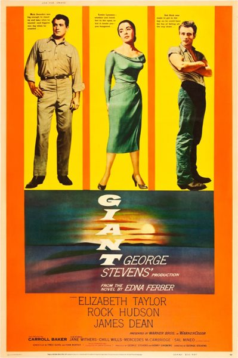

Giant
1956 American epic Western drama film
Giant is a 1956 American epic drama film directed by George Stevens, from a screenplay adapted by Fred Guiol and Ivan Moffat from Edna Ferber's 1952 novel. The film stars Elizabeth Taylor, Rock Hudson, and James Dean; and features Carroll Baker, Jane Withers, Chill Wills, Mercedes McCambridge, Dennis Hopper, Sal Mineo, Rod Taylor, Elsa Cárdenas, and Earl Holliman.
Trivia
- Won the Academy Award for Best Director.
- Nominated for: Academy Award for Best Supporting Actress; Academy Award for Best Actor; Academy Award for Best Actor; Academy Award for Best Director; Academy Award for Best Film Editing; Academy Award for Best Writing, Adapted Screenplay; Academy Award for Best Costume Design, Color; Academy Award for Best Picture; and more.
- Based on Giant (1952 novel by Edna Ferber).
Previous Showings
4 Runs • 3 Festivals
4,455 tickets sold
All runs on record (4):
- August 31 - September 3, 1991 · 2,102 tickets
- August 31 - September 1, 2000 · 967 tickets · Summer 2000
- April 14 - 15, 2011 · 933 tickets · Elizabeth Taylor
- September 2 - 3, 2026 · 453 tickets · Summer 2026 including the Films of Marilyn Monroe